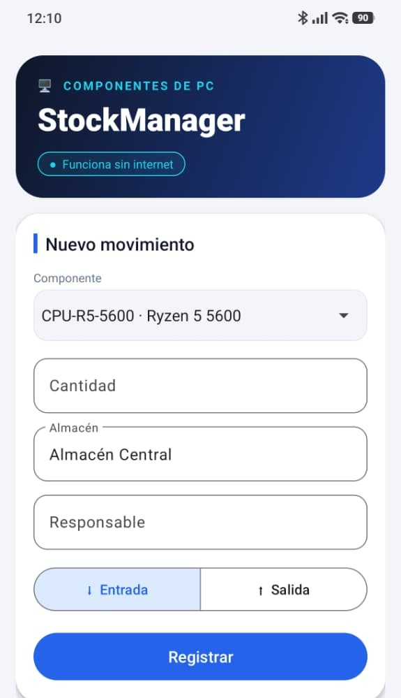
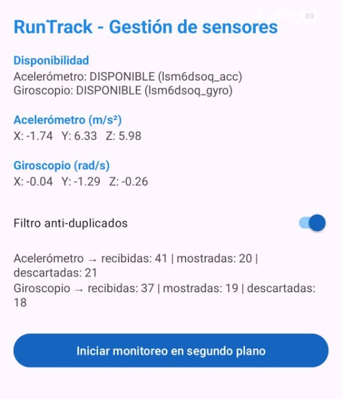
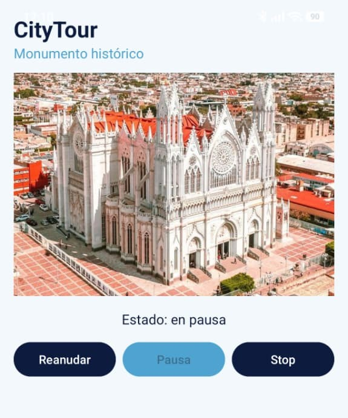

Angel Manuel Salazar Sánchez

Soy estudiante de Ingeniería en Software y Tecnologías de la Información, apasionado por el desarrollo web, la creación de aplicaciones móviles y la optimización de hardware. Disfruto transformar ideas en soluciones tecnológicas eficientes, tanto en el código como en los componentes físicos.
Ver mi portafolioProyectos


